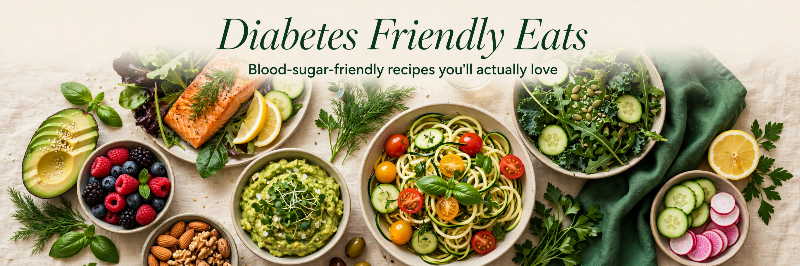

Diabetes Friendly Eats
Blood-sugar-friendly recipes you'll actually love
Dinners, breakfasts, desserts and meal prep — with carb counts on every recipe. Food the whole family will eat.
New here? Start here.
The simplest way to build a plate is the plate method. No weighing, no apps — just look down at your plate and divide it up like this.
This is general information about a common way of building meals. Ask your clinician or dietitian about the plan that's right for you.
Browse by board
What are we cooking?
Eight collections, same as our Pinterest boards. Pick one and jump straight to its recipes.
Most loved
Featured recipes
The four recipes readers come back to again and again. Tap any recipe to open the full ingredients, steps and nutrition.
All recipes
32 recipes, carb counts up front
Every card shows prep time, cook time, servings and carbs per serving before you click. Open a recipe for the full ingredients, numbered steps and nutrition panel. All nutrition numbers are estimates.
Weekly meal plan
The 7-day plan
Built from 16 of the recipes on this page, with leftovers planned in so nothing goes to waste. Tap a recipe name anywhere above to open it.
| Day | Breakfast | Lunch | Dinner |
|---|---|---|---|
| Monday | Baked Spinach & Feta Egg Bites | Mason Jar Greek Salad | 15-Minute Sheet Pan Steak & Veggies |
| Tuesday | Greek Yogurt Berry Parfait | Leftover Sheet Pan Chicken & Veggie Meal Prep | Slow Cooker Beef & Mushroom Stew |
| Wednesday | Baked Spinach & Feta Egg Bites | Leftover Beef & Mushroom Stew | Air Fryer Chicken Fajita Bowls |
| Thursday | Greek Yogurt Berry Parfait | Leftover Fajita Bowls | Zucchini Noodle Chicken Alfredo |
| Friday | Baked Spinach & Feta Egg Bites | Mason Jar Greek Salad | Garlic Butter Salmon with Green Beans |
| Saturday | Greek Yogurt Berry Parfait | Slow Cooker Salsa Chicken in lettuce cups | Mediterranean Cauliflower Rice Bowls |
| Sunday | Baked Spinach & Feta Egg Bites | Leftover Salsa Chicken | Sheet Pan Chicken & Veggie Meal Prep |
Snacks through the week
Chocolate Almond Butter Protein Balls and Everything Bagel Deviled Eggs — make a batch of each on Sunday and the 3 p.m. moment is covered.
Desserts
Almond Flour Chocolate Chip Cookies and No-Bake Lemon Cheesecake Bites. Dessert is not off the table — it's just made differently.
The week's grocery list
Everything for the plan above, grouped the way the store is laid out.
Produce
- 6 bell peppers
- 5 zucchini
- 3 red onions
- 1 yellow onion
- 2 heads garlic
- 4 lemons
- 3 limes
- 2 pints cherry tomatoes
- 1 bag spinach
- 2 cups mixed berries
- 2 avocados
- 3 cups broccoli florets
- 2 cups baby carrots
- 1 sweet potato
- 2 cucumbers
- 12 oz green beans
- 12 oz mushrooms
- 3 carrots
- 1 bunch celery
- 8 cups cauliflower rice (fresh or frozen)
- 1 head lettuce
- Fresh parsley and cilantro
Protein
- 1 lb flank steak
- 4 salmon fillets
- 4 lb chicken breast
- 4 chicken thighs
- 2 lb beef chuck
- 2 dozen eggs
Dairy & Fridge
- Butter
- Feta
- Cottage cheese
- Cream cheese
- Plain nonfat Greek yogurt
- Parmesan
- Heavy cream
Pantry
- Olive oil
- Almond flour
- Almond butter
- Monk fruit sweetener
- Unsweetened cocoa powder
- Chia seeds
- Sugar-free chocolate chips
- Salsa (no sugar added)
- Beef broth
- Tomato paste
- Canned chickpeas
- Kalamata olives
- Tahini
- Dijon mustard
- Everything bagel seasoning
- Smoked paprika
- Cumin
- Chili powder
- Fajita seasoning
- Garlic powder
- Oregano
- Thyme
- Bay leaves
- Dill
- Nutmeg
- Vanilla extract
- Salt
- Pepper
Shop
Shop this recipe
The tools and staples these recipes actually use, in my kitchen every week.
As an Amazon Associate I earn from qualifying purchases.
Hi, I'm Carl.
I'm Carl. I live with type 2 diabetes, and I cook this way every day — not because a textbook told me to, but because this is my kitchen, my plate, my life. These are the meals my whole family actually eats. I'm not a doctor or a dietitian; I'm a home cook sharing what works at my table.
New recipes land on Pinterest first — boards for dinners, breakfasts, snacks, desserts and meal prep, all in one place.
Questions or a recipe request? The best way to reach the site is by email at hello@diabetesfriendlyeats.com.
Follow Diabetes Friendly Eats on Pinterest → Follow Diabetes Friendly Eats on Instagram → Follow Diabetes Friendly Eats on Facebook →